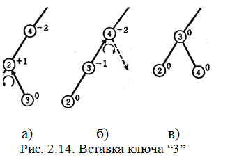

Операции редактирования нарушают балансировку двоичного дерева. Балансировка дерева - сложная операция, поэтому на практике широко применяются бинарные деревья, которые используют менее строгий критерий сбалансированности (АВЛ-деревья), предложенный Адельсоном-Вельским и Ландисом [10].
В соответствии с их определением бинарное дерево называется сбалансированным, если высота левого поддерева каждого узла отличается от высоты правого поддерева не более чем на 1.
Эти деревья называются в честь этих математиков АВЛ-деревьями, или просто сбалансированными деревьями.
Полностью сбалансированные деревья являются частным случаем «сбалансированных деревьев».
Дадим следующее определение “показателю сбалансированности” узлов для деревьев произвольной структуры: (показатель сбалансированности узла) = (высота правого поддерева этого узла)—(высота левого поддерева этого узла).
В АВЛ-дереве показатель сбалансированности всех узлов равен или -1, или 0, или +1. В полностью сбалансированном дереве для всех узлов, за исключением максимум одного узла, показатель сбалансированности равен нулю. Если для всех узлов, за исключением листьев, показатель сбалансированности равен +1 или –1, то такое дерево называется деревом Фибоначчи.
Дерево Фибоначчи высоты 6 показано на рис. 2.11. Как ясно из сказанного выше, АВЛ-дерево высоты h есть дерево с наименьшим числом узлов п, высота которого почти равна log2n. Можно дать и более точную оценку h:
1,4404 log2 (n+2)- 0,328 > h > log2 (n + 1)
Между полностью сбалансированными деревьями и деревьями Фибоначчи располагаются самые разные сбалансированные деревья.
В общем случае показатели сбалансированности узлов АВЛ-дерева могут быть разными, как показано на рис. 2.12.
АВЛ-дерево представляет собой структуpy, для которой любая операция поиск, вставка и удаление ключа имеет временную сложность O(log2n).
Теперь попробуем произвести вставку новых ключей в АВЛ-дерево. Если вставку новых ключей производить в дерево, показанное на рис. 2.12, то вставляемый ключ займет место одного из внешних узлов дерева а, b, ..., u, который станет после вставки внутренним узлом дерева. При этом могут наблюдаться следующие случаи:
1. Случай с. Показатель сбалансированности улучшается.
2.Случаиh, i, j, k, l, m.. Показатель сбалансированности ухудшается, но свойства АВЛ-дерева сохраняются.
3. Все остальные случаи, за исключением указанных в 1 и 2, нарушают свойства АВЛ-дерева. Появляются узлы с показателем сбалансированности +2 или —2, и для сохранения свойства сбалансированности АВЛ-дерева потребуется некоторая корректировка структуры дерева.
Из трех указанных выше случаев ситуации 1 и 2 проблемы не составляют. Посмотрим, как следует изменить структуру дерева в случае 3, чтобы восстановить свойство сбалансированности АВЛ-дерева.
Например, пусть вставляется ключ со значением “1”. Часть структуры дерева после вставки вместе с показателями сбалансированности узлов показана на рис. 2.13, а. Здесь показатель сбалансированности узла “4” окажется равным —2, и условия АВЛ-дерева перестанут удовлетворяться. Попробуем восстановить баланс АВЛ-дерева, производя корректировку его структуры в пределах этого поддерева. Вместо узла “4” корнем этого поддерева можно сделать узел “2”, совершив поворот узлов “2” и “4” направо.

Что произойдет, если в исходное дерево вставить ключ не со значением “1”, а со значением “3”?
В этом случае восстановить баланс будет несколько сложнее. Вначале повернем налево узлы “2” и “3”, как показано на рис. 2.14 а), и получим структуру, показанную на рис. 2.14 б), которая аналогична структуре на рис. 2.13,а. Теперь, если узлы “3” и “4” повернуть направо, то участок дерева окажется сбалансированным, как показано на рис. 2.14 в).
Рассмотрим теперь случай, когда производится вставка ключа “7”. В этом случае (рис. 2.15,а) вблизи вставленного узла сбалансированность сохраняется.
Однако результат вставки сказывается выше—для узла “14”, показатель сбалансированности для которого становится равным —2. Поскольку при этом узел “14” находится точно в таком же положении по отношению к узлу “10”, как и узел “4” по отношению к узлу “2” на рис. 2.13, то, если совершить аналогичный поворот направо, получим сбалансированный участок, как показано на рис. 2.15,б. Однако при этом кроме поворота, показанного на рис. 2.13, потребуется узел “12” открепить от узла “10” и прикрепить к узлу “14”. Вставка ключа “9” приводит почти к такому же эффекту, как и вставка ключа “7”.
Последовательность действий при вставке ключа “11” в дерево показана на рис. 2.16 и, по существу, аналогична действиям, показанным на рис. 2.14; только в этом случае также при повороте узел “11” необходимо открепить от узла 12” и прикрепить к узлу “10”.
Вставка ключа “13” выполняется аналогичным образом.
Если попытаться обобщить рассмотренные случаи корректировки структуры дерева с целью балансировки, то получим диаграммы, показанные на рис. 2.17 и 2.18.
Если после вставки показатели сбалансированности узлов имеют одинаковый знак и отличаются только на единицу, как для узлов “К” и “J” на рис. 2.17, то восстановить баланс дерева можно однократным поворотом (включая одно переприкрепление поддерева), при этом вставка не будет оказывать влияния на другие участки дерева.
Если же после вставки показатели сбалансированности имеют разный знак, например как для узлов “K” и “J” на рис. 2.18 (т.е. их разница по абсолютной величине равна 3), то можно восстановить баланс дерева двукратными поворотами трех узлов, включая узел “J” (используя два переприкрепления поддеревьев). В этом случае вставка также не оказывает влияния на другие участки дерева.
Укрупненный алгоритм вставки ключа в АВЛ-дерево и балансировки его имеет вид:
1. Ищем место вставки ключа;
2. Вставляем ключ путем изменения указателей у предка;
3. Проверяем балансировку узлов (при сбалансированных узлах – выход);
4. При разбалансировке узлов выявляем необходимость:
- одного вращения, выполняем эту операцию и переходим к шагу 3;
- двух вращений, выполняем эти операции и переходим к шагу 3;
Итак, все случаи, в которых после вставки необходима дополнительная балансировка для сохранения свойств АВЛ-дерева, ограничиваются случаями, показанными на рис. 2.17 и 2.18, и случаями зеркального отражения этих структур. Приведенный анализ показывает принципиальную возможность вставки с сохранением структуры АВЛ-дерева.
Операция удаления узла из АВЛ-дерева состоит из удаления как в обычном бинарном дереве, и балансировке АВЛ-дерева, как было рассмотрено ранее при вставке.
Для оценки эффективности поиска со вставкой, при условии, что все вставляемые ключи поступают в случайном порядке, потребуется ответить на следующие вопросы:
1. Как зависит математическое ожидание значения высоты от общего числа узлов n в дереве?
2. Какова вероятность возникновения случаев, не требующих дополнительной балансировки, случаев, требующих однократного поворота, и случаев, требующих двукратного поворота соответственно?
3. Как зависит число операций при вставке одного узла от длины пути, ведущего из внешнего узла вверх, и от числа узлов n в дереве?
До сих пор не удалось дать точных ответов на эти вопросы. Однако сочетание некоторых теоретических рассуждений и эмпирических результатов позволяет сделать следующие утверждения:
1. Математическое ожидание значения высоты при больших n близко к значению log2n + 0,25.
2. Вероятность того, что при вставке не потребуется дополнительная балансировка, потребуется однократный поворот или двукратный поворот, близка к значениям 2/3, 1/6 и 1/6 соответственно [1].
3. Среднее число сравнений при вставке n–го ключа в дерево выражается формулой alog2n + b (a, b - постоянные) [1].
Здесь опущены теоретические выкладки, которые доказывают утверждение, что трудоемкость удаления узлов из АВЛ – дерева также зависит от числа узлов в дереве как log2n.
Таким образом, АВЛ–дерево представляет собой структуру, для которой любая операция: поиск, вставка и удаление ключа имеет временную сложность O (log2n).
Пример 2.9. Процедуры формирования и редактирования АВЛ-деревьев.
typedefstruct_node//структура листа и узла АВЛ дерева
{
intkey; // ключ узла
_node*s_left; // указатель на левое поддерево
_node*s_right; // указатель на правое поддерево
} node;
node *headTree = NULL; // указатель на корень дерева
// процедура добавления к АВЛ дереву листа
void addNode(int keyNode, node **node_pointer)
{
node *newnode; // указатель на новый лист
// выделяем память под лист
newnode= (node*) Malloc(sizeof(node));
// инициализируем элементы листа
newnode->s_left= NULL;
newnode->s_right = NULL;
newnode->key = keyNode;
*node_pointer= newnode;
}
// процедура заполняет дерево с корня
void makeTree(node *head)
{
int temp;
node*search;
// считываем поэлементно список из чисел и заполняем дерево
while(!feof(f)) { // считываем из файла f
fscanf(f, "%d", &temp);
// ищем куда вставить новый ключ
search = head; // поиск начинаем с корня
while (1) {
if(temp < search->key){
if (search->s_left) search=search->s_left;
else { addNode(temp, &search->s_left); break; }
}
else
if (search->s_right) search=search->s_right;
else { addNode(temp, &search->s_right); break; }
} // endwhile
} // endwhile
}
// процедура строит дерево, начиная с корня
void build_AVL_Tree()
{
int temp;
fseek(f, 0, 0);
if (feof(f)){ printf("файлсодержитпустоедерево!"); getch(); exit(1); }
fscanf(f, "%d", &temp);
//выделяем память и инициализируем корень дерева
headTree = (sheet*)Malloc(sizeof(sheet));
headTree->key = temp;
headTree->s_left = NULL;
headTree->s_right= NULL;
//строим дерево начиная с корня
MakeTree(headTree);
}
// процедура находит высоту узла
inthigh(node*node);
// процедура находит высоту поддерева
int high_p(node *node);
// процедура проверяет узел дерева на сбалансированность
intcheckNode(node*node);
// процедура проверяет поддерево на сбалансированность и в случае //расбалансированности возвращает ключ несбалансированного узла, //иначе 0
intcheckTree(node*node);
// процедура ищет предка для данного ключа
// возвращает указатель на структуру предка
node* search_rod(intkey_,node*node);
// процедура проводит поиск ключа в поддереве
node* search(int key_,node *node);
// процедура ищет нижний левый элемент поддерева
node* search_left(node *node);
// процедурадобавляетключдерева
void addKey(int temp, node *head)
{
node *search;
// считываем поэлементно список из чисел и заполняем дерево
// ищем, куда вставить новый ключ
search = head; // поиск начинаем с корня
while (1) {
if (temp < search->key){
if (search->s_left) search=search->s_left;
else { addNode(temp, &search->s_left); break; }
}
else
if (search->s_right) search=search->s_right;
else { addNode(temp,&search->s_right); break; }
} // endwhile
}
// процедура удаляет ключ дерева
int delKey(int key)
{
sheet *node, *node_rod;
node = search(key, headTree);
node_rod = search_rod(node->key, headTree);
//если у удаляемого узла нет левого поддерева
if(!node->s_left){
// если левый указатель предка указывает на node
if ((node_rod->s_left)->key == node->key)
node_rod->s_left = node->s_right;
else node_rod->s_right = node->s_right;
return 1;
}
//если у удаляемого узла нет правого поддерева
if(!node->s_right) {
// если левый указатель предка указывает на node
if ((node_rod->s_left)->key == node->key)
node_rod->s_left = node->s_left;
else node_rod->s_right = node->s_left;
return 1;
}
// если удаляемый узел имеет два поддерева
// правое поддерево левого потомка перевешиваем на нижний левый //элемент левого поддерева правого потомка удаляемого узла
search_left(node->s_right)->s_left = (node->s_left)->s_right;
(node->s_left)->s_right = node->s_right;
if (key == headTree->key) headTree = node->s_left;
else {
// если левый указатель предка указывает на node
if ((node_rod->s_left)->key == node->key)
node_rod->s_left = node->s_left;
else node_rod->s_right=node->s_left;
}
free(node);
}
// процедура балансирует узел АВЛ-дерева
intbalans(node*node)
{
int k, // показатель сбалансированности узла
k_p; // показатель сбалансированности поддерева
node*temp;
if(!node) returnNULL;
// считаем показатель сбалансированности поддерева
k = high_p(node->s_right) - high_p(node->s_left);
// если правое поддерево выше левого
if(k > 0)
{ // считаем показатель сбалансированности поддерева
k_p= high_p((node->s_right)->s_right) - high_p((node->s_right)->s_left);
// если k и k_p одного знака
if (k_p >= 0)
{
temp = node->s_right;
node->s_right = temp->s_left;
temp->s_left= node;
// если левый указатель предка указывает на node
if (headTree->key == node->key) headTree = temp;
else
if ((search_rod(node->key, headTree)->s_left)->key == node->key)
search_rod(node->key, headTree)->s_left=temp;
else search_rod(node->key, headTree)->s_right = temp;
}
else // если к и к_р разных знаков
{
temp = (node->s_right)->s_left;
(node->s_right)->s_left = temp->s_right;
temp->s_right = node->s_right;
node->s_right = temp->s_left;
temp->s_left= node;
// если левый указатель предка указывает на node
if(headTree->key == node->key)headTree = temp;
else
if ((search_rod(node->key, headTree)->s_left)->key == node->key)
search_rod(node->key, headTree)->s_left = temp;
else search_rod(node->key, headTree)->s_right = temp;
}
} // если левое поддерево выше правого
elseif(k< 0) {
// считаемпоказательсбалансированностиподдерева
k_p = high_p((node->s_left)->s_right) - high_p((node->s_left)->s_left);
// если к и к_р одного знака
if (k_p < 0) {
temp = node->s_left;
node->s_left = temp->s_right;
temp->s_right= node;
// если левый указатель предка указывает на node
if (headTree->key == node->key) headTree = temp;
else
if ((search_rod(node->key, headTree)->s_left)->key == node->key)
search_rod(node->key, headTree)->s_left=temp;
else search_rod(node->key, headTree)->s_right = temp;
} // endif(k_p< 0)
// если к и к_р разных знаков
else {
temp = (node->s_left)->s_right;
(node->s_left)->s_right = temp->s_left;
temp->s_left = node->s_left;
node->s_left = temp->s_right;
temp->s_right= node;
// если левый указатель предка указывает на node
if (headTree->key == node->key) headTree = temp;
else
if ((search_rod(node->key, headTree)->s_left)->key == node->key)
search_rod(node->key, headTree)->s_left = temp;
else search_rod(node->key, headTree)->s_right = temp;
} // end else if (k_p < 0)
}//end else if (k > 0)
else { printf("узелсбалансирован"); getch(); exit(1); }
}
// процедурабалансируетАВЛ-дерево
int balansTree(node *node)
{
while(checkTree(node)) {
//если поддерево несбалансированного узла имеет //несбалансированный узел, то сначала нужно сбалансировать его
if (node->s_right)
if (checkTree(node->s_right)) balans(search(checkTree(node->s_right), node->s_right));
if (node->s_left)
if (checkTree(node->s_left)) balans(search(checkTree(node->s_left), node->s_left));
balans(search(checkTree(node), node));
}
}